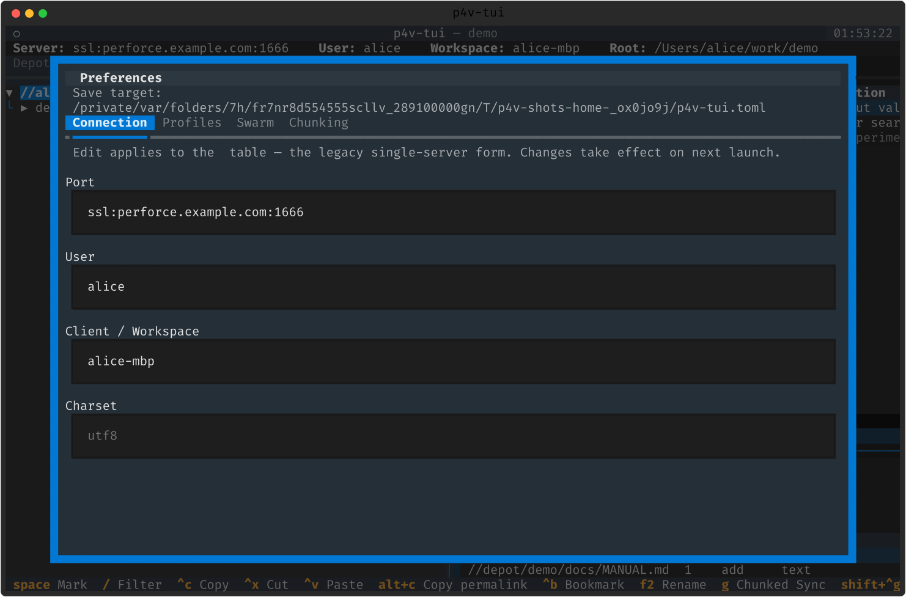
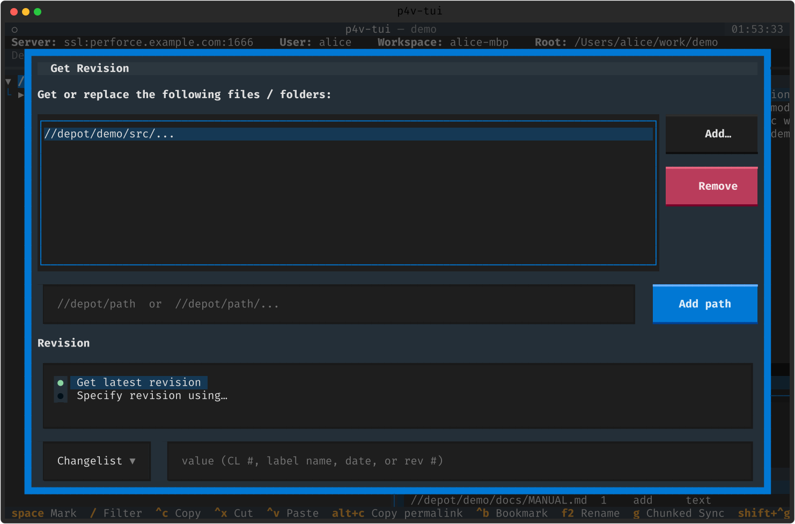
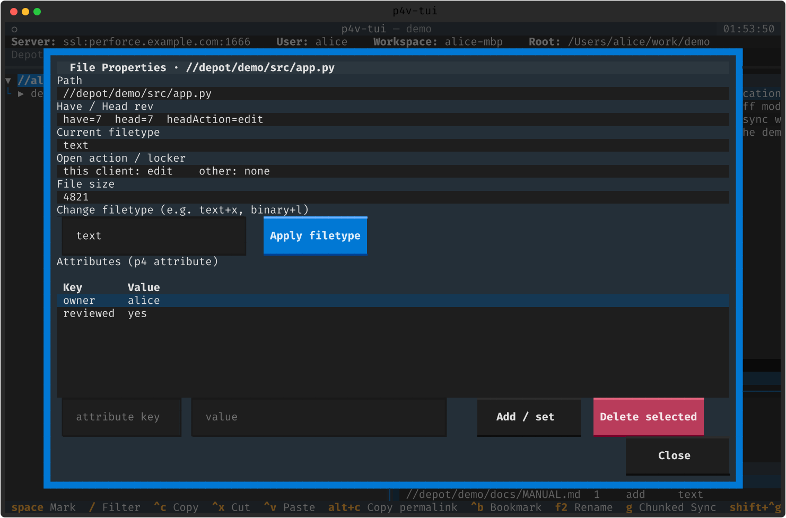

설정 파일
모든 설정은 p4v-tui.toml 하나에 모입니다. 각 섹션과 인앱 설정 GUI 를 훑습니다.
설정 GUI — Ctrl+,
흩어진 설정을 떠나지 않고 편집합니다. 연결·Swarm·청킹·프로파일을 다루고, 저장하면 앱이 로드한 파일(또는 ./p4v-tui.toml)에 씁니다.

p4v-tui.toml 섹션
모두 선택 사항이며 P4 환경변수 / P4CONFIG 로 폴백합니다. 로컬 설정 파일은 .gitignore 되어 호스트명이 커밋되지 않습니다.
| 섹션 | 용도 |
|---|---|
| [connection] | 단일 서버(port/user/client/charset) |
| [[profile]] | 여러 서버 — 각각 시작 피커의 한 줄 |
| [swarm] | Swarm 리뷰 URL 생성(base_url) |
| [jira] | 서브밋 시 이슈 링크(base_url·projects·path_projects) |
| [[external_editor]] | Open With… 항목({path}/{dir}/{name}) |
| [merge_tool] | 외부 3-way 툴({base}/{theirs}/{yours}/{merge}) |
| [chunking] | 청크 전략(개수/크기/단일/서브디렉토리) + 잡별 오버라이드 |
| [[macro]] | 스크립트 잡 체인(Ctrl+Shift+M), 선택적 key 바인딩 |
| [narrow] | disabled_pages / skip_empty / layout |
보안 — [[macro]] 와
[[external_editor]]/Open With… 는 임의 로컬 명령을 실행합니다.
신뢰할 수 없는 p4v-tui.toml 을 실행하지 마세요.
부가 다이얼로그
설정과 함께 자주 쓰는 두 다이얼로그입니다.
- Get Revision ➕ — p4v 의 "Get Revision…" 포트. 여러 타깃을 CL/라벨/날짜/리비전별로, Force/Safe Update/CL 내 파일/라벨에 없는 것 제거 옵션과 함께.
- File Properties — 파일타입·속성(p4 attribute) 보기·편집.

